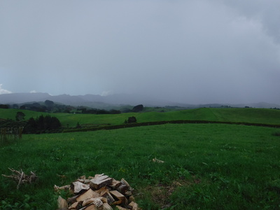
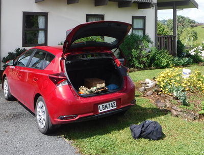
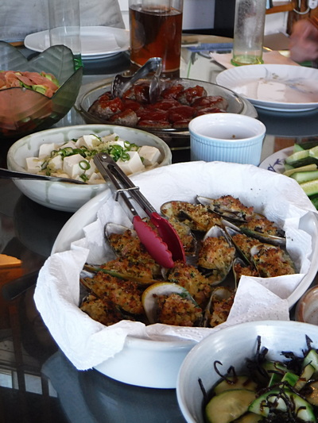
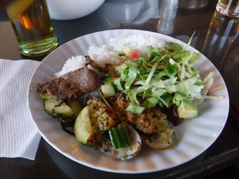
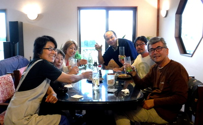
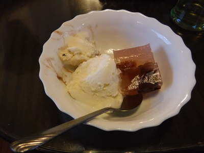

釣行日誌 ＮＺ編 「一期一会の旅：A Sentimental Journey」
命からがら
などととりとめの無い回想、追想にふけりつつ雷雲の行方を見ていたが、いっこうに動く気配は無い。むしろ若干こちら側に寄ってきており、雷鳴も大きくなり稲光の回数も多くなってきた。もう１時間あまりもここに伏せっている。ひときわ大きな閃光を見た瞬間、車までもどる決心が付いた。ロッドとベストを放り投げた所まで行って大急ぎでリールを外してパックロッドをたたむ。重いベストを着てから、牧場主の家経由で車までの最短経路を通ることにする。牧場の丘は急勾配で、濡れたウェーディングシューズが重かったが、背後からの雷鳴でいやがおうにも足取りが速まる。牛の蹄が作った無数の穴ぼこに足を取られながら、憑かれたようにぜいぜいと荒い息で丘を登る。

牧場主の家まで登ってきて振り返ると、山頂も山麓も暗灰色の厚い雷雲に隠れてしまっていた。不法侵入になるが、さっき挨拶したから大目に見てね！と、裏手のフェンスを開けて薪小屋の脇から敷地に入り、駐車場からドライブウェイの砂利道へ、そして農道へと歩み続ける。川で待避していた時は谷底で低い場所だったが、車までの農道は丘の稜線沿いに延びており、そこらが一番高くなっている。とうとう雨がポツポツと落ちてきた。
『これはいよいよヤバい！』
車の赤色が遠くに見えたので走ろうとするが、気ばかり焦って疲れた足が動かない。雨脚が強くなってきた。横目に稲光が映る。最後の50mが絶望的にしんどい。這々の体でカローラにたどり着くと、大急ぎでベストの背中に入れたポーチからキーを取り出してロックを開ける。ロッドとベストをトランクに放り込んでから乗り込む。ウェーディングシューズを脱いでいる余裕は無い。
『ふ～うぅ....。なんとか助かった。』
ワイパーを全開にしても前が見えないくらい雨は強く、しばし車の中で息を整える。もう安心だ。車には雷は落ちないだろう。
中が濡れたネオプレンソックスやタイツが冷えて気持ち悪かったが、ピロンギアの町まではこの格好で行くことにして、豪雨と閃光、雷鳴の中そろそろと車を出す。フロントウィンドウを叩く雨で、ワイパー全開でも見通しが悪いので60kmくらいでトロトロと走る。20分も走るとピロンギアの公衆トイレにたどり着いた。着替えを持って入り一息つく。トイレでウェーディングシューズを脱いで乾いた靴下とズボンを履くと、ようやく心の奥底から安心できた。
午後４時前に田島さん宅に着くと、なんとハミルトンは快晴であった。ヤレヤレとため息をつきながら釣り道具を取り出して乾かす。

田島さん夫妻に、ひどい雷に遭遇して命からがら帰ってきましたと告げると、ちょうど４時のテレビのトップニュースで、ハミルトン市内の高校に落雷があったと報じていた。グラウンドのラグビーポールに直撃してから電撃が横走りして校舎にも被害があったが、幸いけが人は無かったとのこと。もしかしたら数日後のニュースには、日本人の釣り人落雷で死亡！などと出ていたかも知れなかった。
今夜は、田島さん宅に、田島さんのご長男、大林さん夫妻、ハミルトン在住で大学時代に剣道の練習でお世話になった小川さんが集まって、再会を歓迎してポットラックパーティを開催していただいた。

焼き肉、生ハムと野菜のサラダ、ハンバーグ、豆腐サラダ、NZ名産のグリーンマッスル（Mussel : ムール貝の一種）のオーブン焼き、キュウリの和え物などなどで、豪華な食卓に感動した。味ももちろん素晴らしい。中でも感心したのは豆腐の美味しさであった。今はハミルトンでこんなに美味しい豆腐が買えるのだと心底驚かされた。いつも日本で食べている豆腐よりも美味しいかもしれなかった。

メインは、田島さん宅で飼っていた牛のお肉（Home killed）の各部位の焼き肉である。レバーやヒレなど、どれも高級焼き肉店を凌ぐほどの（行ったこと無いけど）の美味しさであった。大林さんの奥さんが作られたマッスルのグリル焼きも素晴らしかった。とても手間が掛かるそうだが、わざわざ準備してくださって本当にありがたかった。夜が更け、ワインの空瓶が次々と横に倒れてゆき、楽しい宴となった。

デザートには、バニラアイスと小川さんの手作り水ようかんをいただき、こちらも感動的な味だった。アイスも水ようかんも噛む必要は無いが、生きていることの味を噛みしめながら、ありがたく頂戴した。

釣行日誌ＮＺ編 目次へ
サイトマップ
ホームへ
お問い合わせ